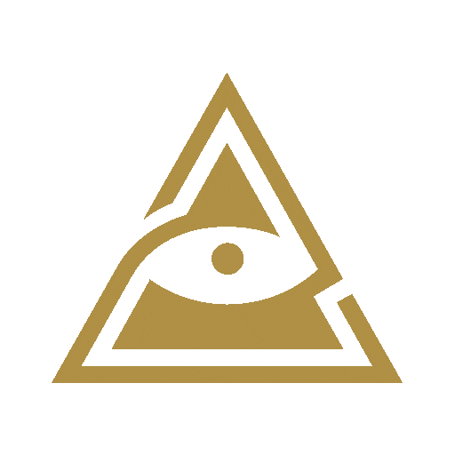

⭐ Nuestro bot 🌼Udyat, pronto contará con las nuevas funcionalidades que se van a añadir, los usuarios podrán usar el bot de manera más cómoda, incluso podrán ver canales en línea dentro del propio bot usando un webview.
👑 El proyecto Udyat tiene algo clave, somos conscientes de los derechos de autor lo cual pueda provocar la eliminación de este canal y el bot, pero tengan en cuenta algo, aunque tumben el canal, o el bot, el contenido el cual tiene el bot, no lo podrán eliminar, por lo que no hará efecto alguno el hecho de tumbarlo, nuestro bot ya existe, y seguirá existiendo pase lo que pase 🌼.
🐱 El plan gratuito nunca dejará de existir, es nuestro medio el cual los usuarios pueden probar el bot de manera gratuita y ver qué tan bien va, las versiones de pago tendrán muchas ventajas frente al plan gratuito para algunos usuarios.
⚔️ La versión actual de Udyat es la 0.0.2, os podeis percatar que el bot aún está en sus primeras versiones, aún le falta mucho camino por recorrer, el bot @JLySearch_bot salió en su primera versión únicamente bajando de YouTube, y ahora baja de miles de plataformas después de meses y años de actualizaciones.
🟫 Intentaremos siempre añadir el contenido más top y más actualizado posible para la mayor cantidad de público posible.